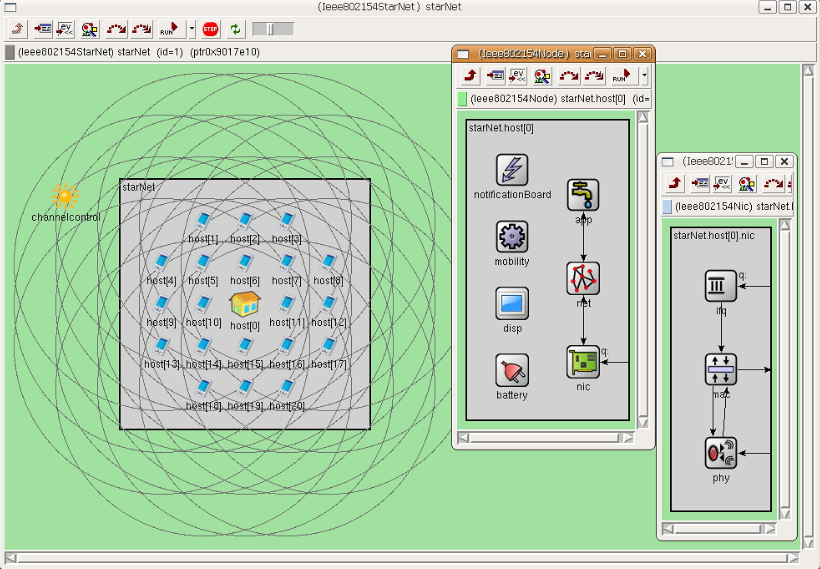

The IEEE 802.15.4 protocol has become the primary solution for many Low-Rate Wireless Personal Area Network (LR-WPAN) applications. This is especially the case for industrial sensor network applications such as automation control.

Researchers from Siemens and the University of Erlangen-Nuremberg performed a series of OMNeT++-based simulation experiments that contribute to a better understanding of IEEE 802.15.4 behavior. The simulations were performed with an IEEE 802.15.4 simulation model the authors developed for OMNeT++.
The results outline the capabilities of this protocol in the selected scenarios, as well as the limitations. They investigated the dependency of the protocol on protocol-inherent parameters, such as the beacon order and the superframe order, and also on different traffic load. The results can be used for planning and deploying IEEE 802.15.4 based sensor networks with specific performance demands. A special focus was put on application scenarios in industrial sensor network applications. The primary requirements were reduced end-to-end latency and energy consumption.
Feng Chen, Nan Wang, Reinhard German and Falko Dressler, 2010. "Simulation study of IEEE 802.15.4 LR-WPAN for industrial applications." Wiley Wireless Communications and Mobile Computing (WCMC), vol. 10 (5), pp. 609-621, May 2010.